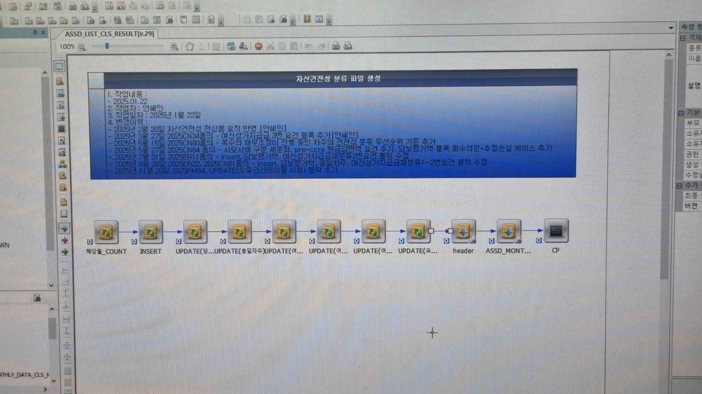
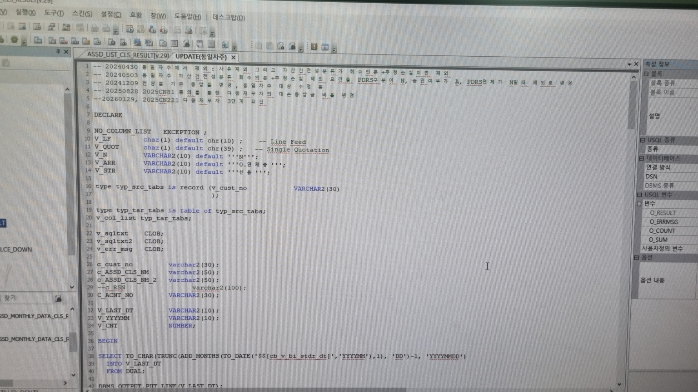

2024.07~2025.02
*요구사항 분석 → 업무 협의 → DB 설계 → 개발 → 테스트 → 운영
사용자 → UI서버(WebSquare) → APP서버(Service) → 배치서버(TeraStream) → 결과 파일 출력

기초데이터 업로드 및 상태 조회 기능 제공
업로드 건수가 6만건 이상이 되면서 10분 내외 배치 속도 발생
건별 insert
- 건별 insert에서 bulk insert로 변경
- commit interval 값 최적화
배치수행 속도 개선(3분24초 → 1분34초)
업로드 파일이 파일최대 사이즈인 50MB 초과하여 업로드 불가
파일 최대 사이즈
- http.m Limit RequestBody 값 수정(50MB → 100MB)
- WebToB서버 설정파일 변경 후 재기동 수행
업로드 오류 개선